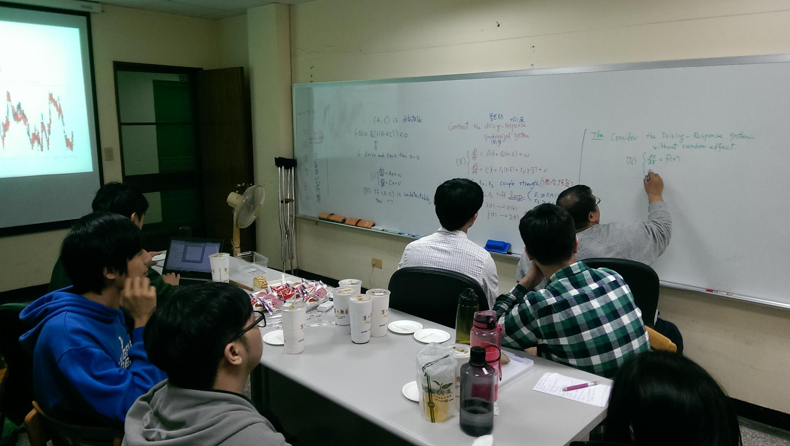
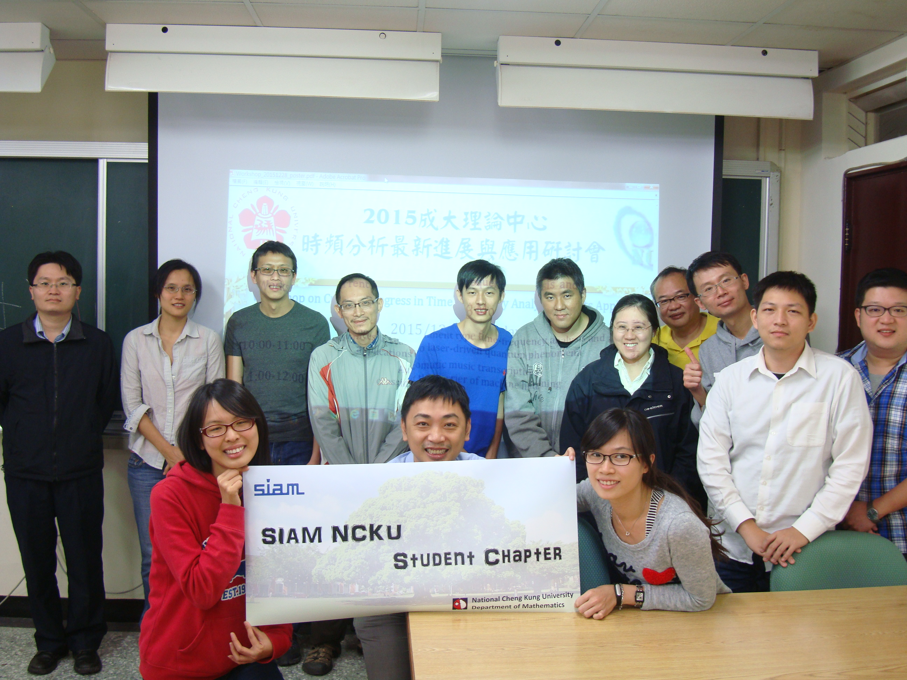
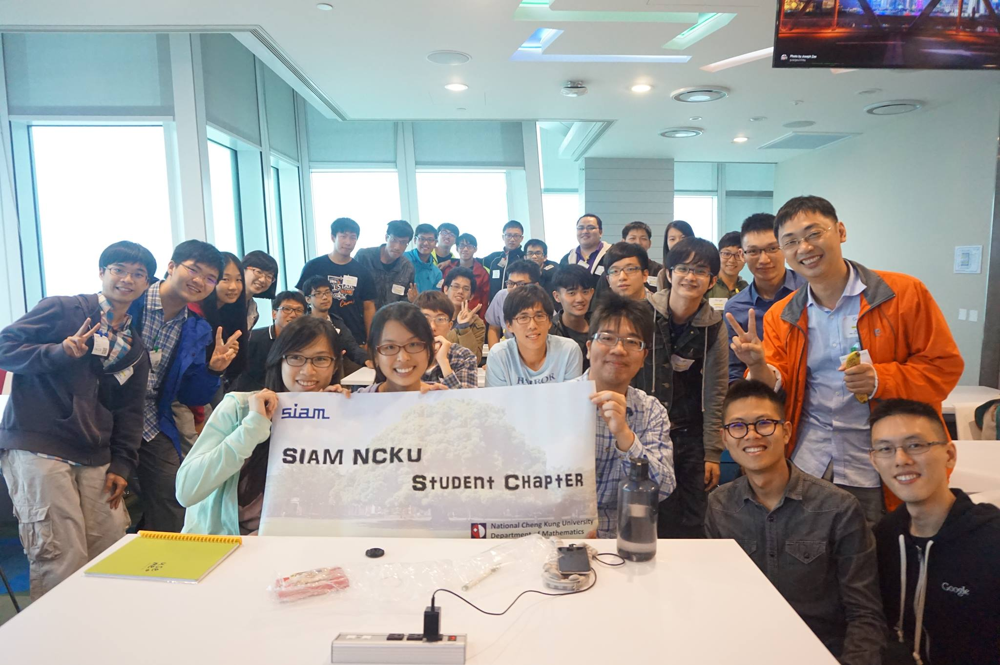

SIAM 國立成功大學學生分會
SIAM 國立成功大學學生分會 (NCKU Student Chapter of SIAM) 由成大數學系王辰樹與舒宇宸教授發起，並於 9/2 得到 SIAM 批准成立。分會的宗旨為推廣下列領域中的應用數學：(1) 平行與高效能計算、(2) 醫學影像及 (3) 數據科學，活動包括舉辦工作坊與演講、安排參訪、組織實務團隊專案等。
SIAM 國立成功大學學生分會 (NCKU Student Chapter of SIAM) 由成大數學系王辰樹與舒宇宸教授發起，並於 9/2 得到 SIAM 批准成立。分會的宗旨為推廣下列領域中的應用數學：(1) 平行與高效能計算、(2) 醫學影像及 (3) 數據科學，活動包括舉辦工作坊與演講、安排參訪、組織實務團隊專案等。

本分會定期舉辦討論會、邀請國內外講者演講，並安排企業參訪等活動，希望藉由活動讓更多學生參與應用數學研究。
Discussion how to parallel computing on FFT and use BLAS to increase the speed of computing matrix and vector.
邀請日本新潟大學田中環教授，加拿大多倫多大學的吳浩榳教授及其研究群來給同學指導時頻分析及最佳化。
在 TWSIAM 陳宜良理事長的促成之下舉辦了企業參訪，邀請了20幾位學生共同到台北 Google 辦公室參訪。
分會歡迎任何有興趣的同學加入！
請以 'Join student chapter at NCKU!' 為標題，寫信至 ycshu@mail.ncku.edu.tw